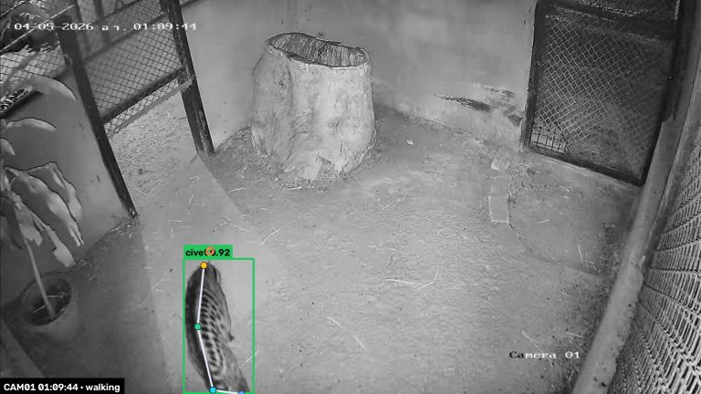
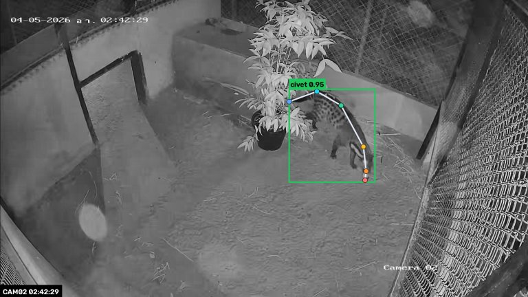
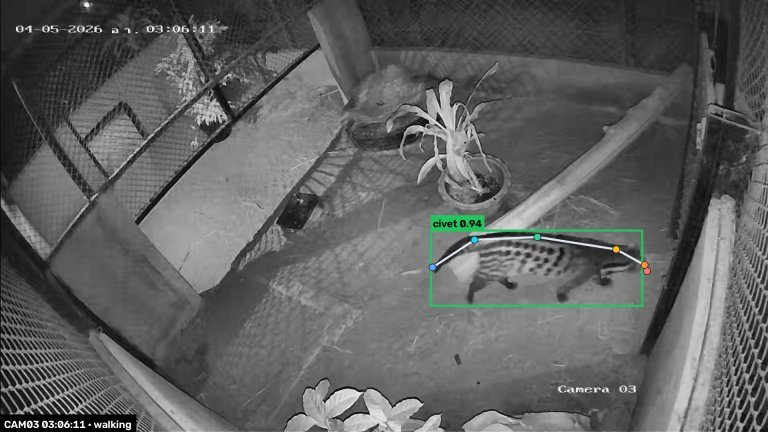
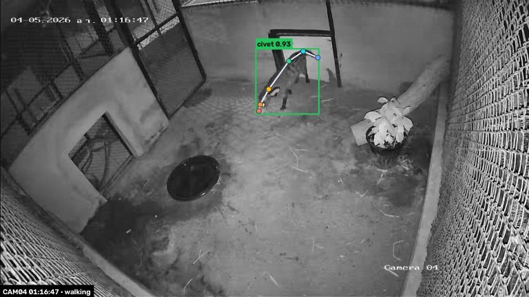
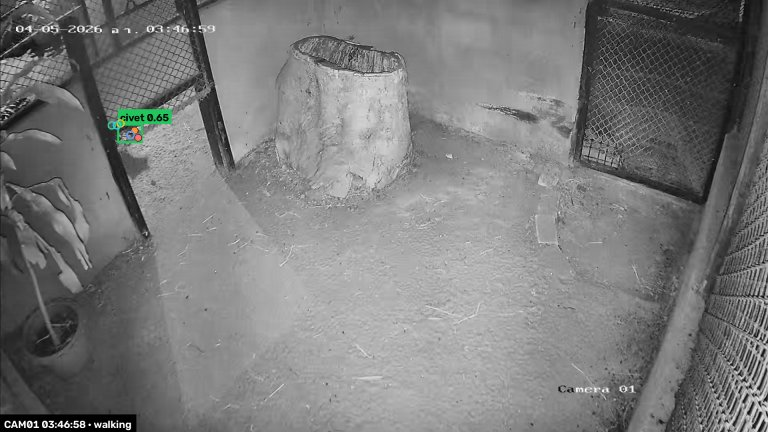
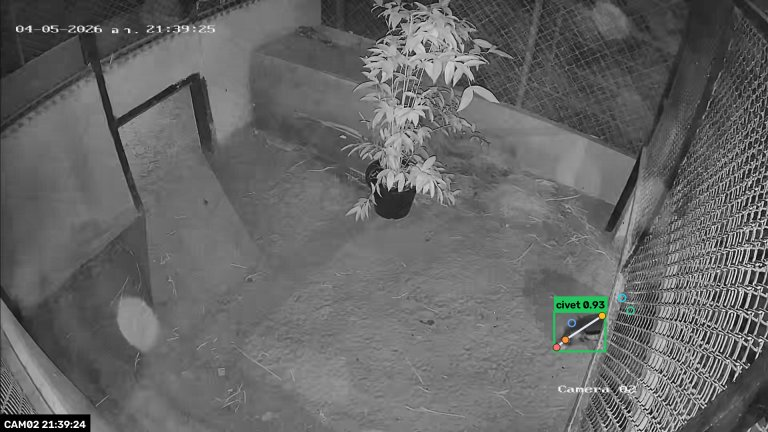
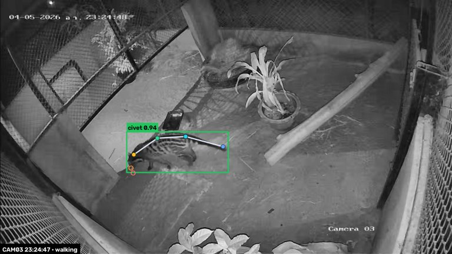
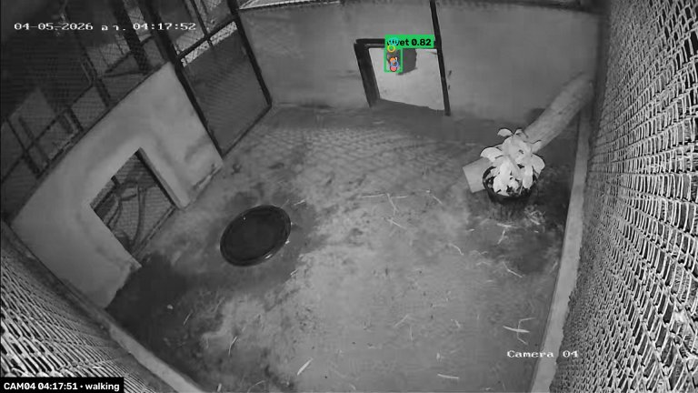
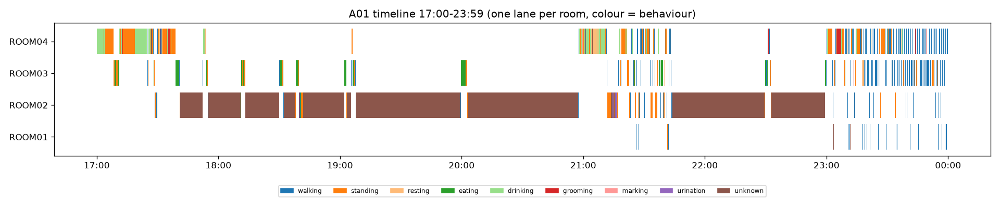
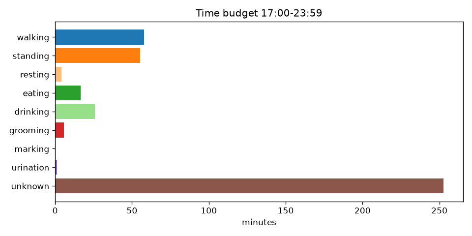

Multi-camera pipeline for the large-spotted civet (ชะมดแผงสันหางดำ) — room A01, four corner cameras, 24 hours of 5 April 2026. Detection → tracking → behaviour → keeper report.
GitHub repository Full results in README
Only the camera that has the civet runs the detector (2.6–2.8× real time on an RTX 2060 Super); idle cameras use a motion check. Every stage is causal, so offline replays equal live behaviour.
Frames from the hand-labelled set with the pose model's predictions drawn live on this page's generator — box + nose, eyes, neck, mid-back, tail base, tail tip. Caption shows camera, clock time and the hand label where the frame falls inside a labelled behaviour piece.








Built from the SQLite behaviour log of the held-out test block: 597 bouts covering all 420 minutes; Room 2 takes 65% of the evening.


| Hour | Active | Inactive | Not seen | Main room | Main behaviour |
|---|---|---|---|---|---|
| 17:00 | 42.2 | 1.4 | 16.4 | ROOM04 | standing |
| 18:00 | 8.4 | 0.0 | 51.6 | ROOM02 | eating |
| 19:00 | 4.3 | 0.0 | 55.7 | ROOM02 | eating |
| 20:00 | 5.5 | 0.0 | 54.5 | ROOM02 | eating |
| 21:00 | 39.6 | 2.5 | 17.9 | ROOM02 | standing |
| 22:00 | 4.0 | 0.0 | 56.0 | ROOM02 | walking |
| 23:00 | 59.0 | 0.4 | 0.7 | ROOM04 | walking |
Minutes per hour. Room share: ROOM02 64.9% · ROOM04 22.2% · ROOM03 11.5% · ROOM01 1.4%. Scored crossings: 10 errors in 22 hand-counted crossings, all at the open D23 gate.
| Metric | Value |
|---|---|
| Detection, box mAP50 (validation) | 0.981 — night 0.975, day 0.985 |
| Pose PCK@0.1 head / tail (validation) | 0.876 / 0.786 |
| Time in the right room | 94.8% |
| Behaviour accuracy (test 23:00–23:30) | 80% of 0.53 s steps |
| Behaviour macro F1 (8 classes present) | 0.48 — 0.65 without marking and defecation |
| Walking / standing / grooming F1 | 0.90 / 0.74 / 0.77 |
| Behaviour validation (4,837 steps) | accuracy 0.84, macro F1 0.67 |
| Bout F1 (same label, ≥ half union overlap) | 0.56 |
| Detector speed | 2.6–2.8× real time per camera (RTX 2060 Super, FP16) |